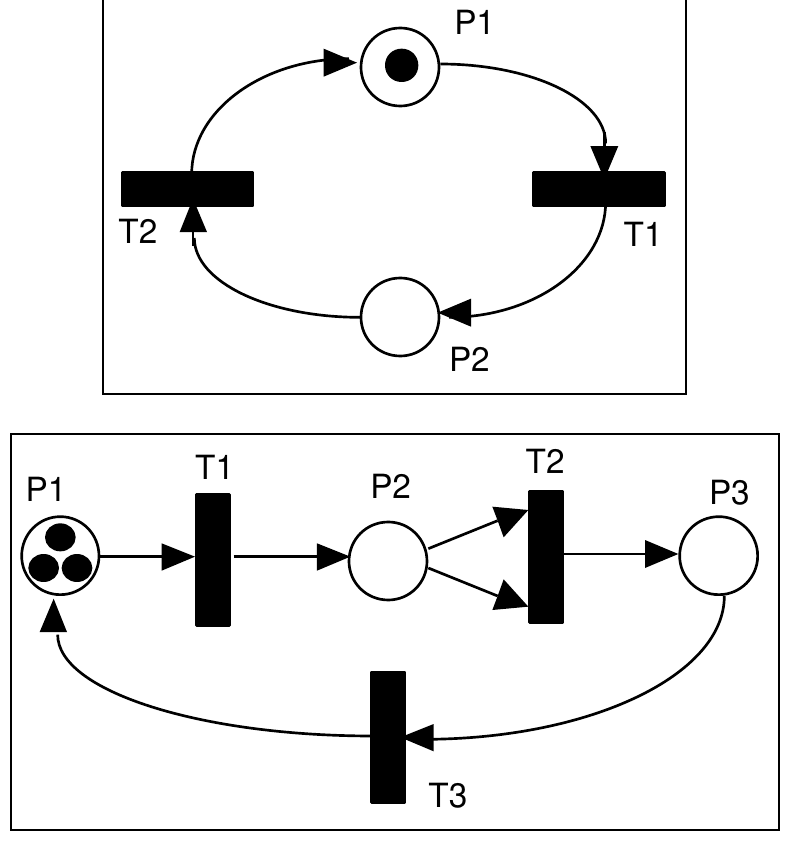

The 22nd Annual ACM International Collegiate Programming Contest World Finals · Problem E
A Petri net is a computational model used to illustrate concurrent activity. Each Petri net contains some number of places (represented by circles), transitions (represented by black rectangles), and directed edges used to connect places to transitions, and transitions to places. Each place can hold zero or more tokens (represented by black dots). Here are two examples:

In the first Petri net above, there are two places (P1 and P2) and two transitions (T1 and T2). P1 initially has one token; P2 has none. P1 is an input place for transition T1, and P2 is an output place for T1. In the second example there are three places and three transitions, with three tokens in P1. T2 has two input places, both of which are P2.
Each transition in a Petri net is either enabled or disabled. A transition is enabled if there is at least one token in each of its input places. Any transition can fire whenever it is enabled. If multiple transitions are enabled, any one of them may fire. When a transition fires, one token is removed from each of the input places, and one token is added to each of the output places; this is effectively done atomically, as one action. When there are no enabled transitions, a Petri net is said to be dead.
In the top example only T1 is enabled. When it fires one token is removed from P1, and one token is added to P2. Then T2 is enabled. When it fires one token is removed from P2, and one token is added to P1. Clearly this Petri net will repeat this cycle forever.
The bottom example is more interesting. T1 is enabled and fires, effectively moving a token to P2. At this point T1 is still the only enabled transition (T2 requires that P2 have two tokens before it is enabled). T1 fires again, leaving one token in P1 and two tokens in P2. Now both T1 and T2 are enabled. Assume T2 fires, removing two tokens from P2 and adding one token to P3. Now T1 and T3 are enabled. Continuing until no more transitions are enabled, you should see that only one token will be left in P2 after 9 transition firings. (Note that if T1 had fired instead of T2 when both were enabled, this result would have been the same after 9 firings.)
In this problem you will be presented with descriptions of one or more Petri nets. For each you are to simulate some specified number of transition firings, NF, and then report the number of tokens remaining in the places. If the net becomes dead before NF transition firings, you are to report that fact as well.
Each Petri net description will first contain an integer NP (0 < NP < 100) followed by NP integers specifying the number of tokens initially in each of the places numbered 1, 2, ..., NP. Next there will appear an integer NT (0 < NT < 100) specifying the number of transitions. Then, for each transition (in increasing numerical order 1, 2, ..., NT) there will appear a list of integers terminated by zero. The negative numbers in the list will represent the input places, so the number -n indicates there is an input place at n. The positive numbers in the list will indicate the output places, so the number p indicates an output place at p. There will be at least one input place and at least one output place for each transition. Finally, after the description of all NT transitions, there will appear an integer indicating the maximum number of firings you are to simulate, NF. The input will contain one or more Petri net descriptions followed by a zero.
For each Petri net description in the input display three lines of output. On the first line indicate the number of the input case (numbered sequentially starting with 1) and whether or not NF transitions were able to fire. If so, indicate the net is still live after NF firings. Otherwise indicate the net is dead, and the number of firings which were completed. In either case, on the second line give the identities of the places which contain one or more tokens after the simulation, and the number of tokens each such place contains. This list should be in ascending order. The third line of output for each set should be blank.
The input data will be selected to guarantee the uniqueness of the correct output displays.
2 1 0 2 -1 2 0 -2 1 0 100 3 3 0 0 3 -1 2 0 -2 -2 3 0 -3 1 0 100 0
Case 1: still live after 100 transitions Places with tokens: 1 (1) Case 2: dead after 9 transitions Places with tokens: 2 (1)